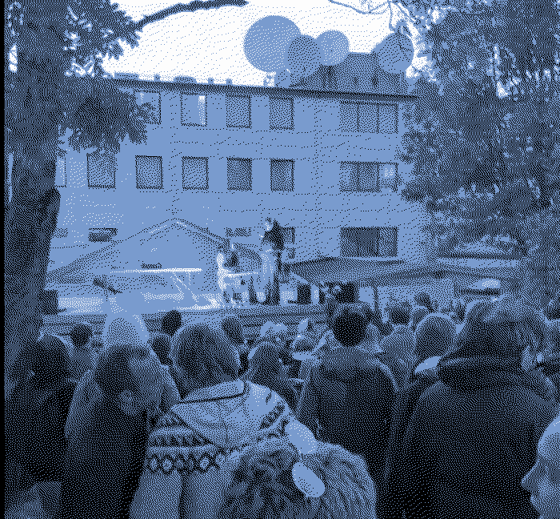

A list of some of the shows I'm playing
Upcoming
Recent & Noteworthy
28.12.23 - Glupsk & Friends - Glupsk w. Brynjar Daðason & Hulda Ragnhildur Hjálmarsdóttir @ Mengi 16.12.23 - Stuttbuxur - Slummi w. Bjarki, ex.girls & Elísabet @ Secret location 15.12.23 - MENGI 10 ÁRA - Guðmundur Arnalds & Örlygur Arnalds w. Una Sveinbjarnadóttir, Kristín Anna, John McCowen, Ásta Fanney, JFDR, Eiríkur Orri, Kraftgalli, Brynjar Daðason & Katie Buckley @ Mengi 19.11.23 - Skúli Sverrisson, John McCowen & Guðmundur Arnalds @ Mengi 02.11.23 - Pellegrina @ Iceland Airwaves Smekkleysa Off-Venue w. Osme & Sigrún @ Smekkleysa 21.10.23 - Sara Flindt & Guðmundur Arnalds w. Rakel, Salóme Katrín & Sandrayati @ Mengi08.10.23 - Ásta Fanney & Guðmundur Arnalds w. Laura Secord, Ingibjörg Turchi & Emma @ Kex
01.10.23 - Sunnudgsdrón - Guðmundur Arnalds @ Smekkleysa
23.09.23 - Pellegrina @ Drif radio
03.09.23 - Lævi Blandið no. 5 - Slummi w. Skrattar, LaFontaine, Vandala, Harry Knucles, Jadzia, Clubkid, ta dj ana & Elísabet @ Kornhlaðan
05.08.23 - Mánakvöld - Glupsk w. Björk @ Smekkleysa
25.07.23 - Kennitala Tour - Pellegrina & Final Boss Type Zero w. sideproject, Flaaryr & Xiupill @ Loophole, Berlin
23.07.23 - Kennitala Tour - Pellegrina & Final Boss Type Zero w. sideproject, Flaaryr & Xiupill @ Chmury, Warsaw
22.07.23 - Kennitala Tour - Pellegrina & Final Boss Type Zero w. sideproject, Flaaryr & Xiupill @ Las (Pavilion), Poznan
21.07.23 - Kennitala Tour - Kennitala Improv Ensemble & Final Boss Type Zero w. sideproject & Xiupill @ Sauna Platform, Warsaw
18.07.23 - Kennitala Tour - Final Boss Type Zero & Pellegrina, w. xiupill & sideproject @ Ignorantka, Lodz
15.07.23 - Kennitala Tour @ Cashmere Radio, Berlin
14.07.23 - Kennitala Tour - Pellegrina & Final Boss Type Zero w. sideproject & dj spell b2b barnesoldat @ Revolver, Oslo
13.07.23 - Pellegrina w. sideproject, dj spell & others @ Hotbox, Oslo
08.07.23 - Kennitala Club - Final Boss Type Zero & Pellegrina w. sideproject, knackered, Vandala, dj_gulli_dj & ta dj ana @ Prikið
09.06.23 - Ásta Fanney & Guðmundur Arnalds @ Mengi
03.06.23 - Kennitala fundraiser @ Bíó Paradís - Final Boss Type Zero w. Xiupill, Flaaryr, sideproject & Ronja
03.06.23 - whale protest @ Smekkleysa - Pellegrina, w. Björk and others. 02.06.23 - Trio w. Skúli Sverrisson & John McCowen @ MENGI, Reykjavík 12.05.23 - Guðmundur Arnalds live set w. Ásta Fanney, Benni Hemm Hemm, Kristín Anna & More @ Brooklyn, NYC
06.05.23 - Guðmundur Arnalds live set w. Björk & Sigtryggur Baldursson @ Smekkleysa, Reykjavík
21.04.23 - Slummi dj set w. Dj Melerito de Jere, DJ Sley & Sideproject Angel & Lottó @ Bravó, Reykjavík
20.04.23 - Final Boss Type Zero w. Afterparty Angel & Lottó @ R6013, Reykjavík
14.04.23 - Slummi w. russian.girls & in3dee @ Húrra, Reykjavík
07.04.23 - PYROMANYA x GLOW PAPPERS - Slummi w. Bart, DJ 67memoriesofu b2b DJ Foguinho & Fruits Cry 2 @ Damas, Lisbon
06.04.23 - Glow Papers - Guðmundur Arnalds w. Bart, 67memoriesofu & Incandescent Loops @ Cosmos, Lisbon
31.03.23 - Agalma Showcase for Physical Cinema Festival @ Mengi, Reykjavík
03.03.23 - Final Boss Type Zero w. Kvikindi & Xiupill @ Húrra, Reykjavík
09.03.23 - Pellegrina w. Ásalaus, Flaaryr & Sean Patrick O'Brien @ Ásmundarsalur, Reykjavík
03.03.23 - Final Boss Type Zero @ Mengi, Reykjavík
16.02.23 - Performance with Ásta Fanney @ Mengi, Reykjavík
04.02.23 - Máni I - Pellegrina w. Björk, Ásmundur & Asalaus @ Smekkleysa, Reykjavík
26.01.23 - Super Soaker I - Soddill w. UMRU, Ronja & Bart @ Prikið, Reykjavík
21.01.23 - Drullumall #4 - Pellegrina w. simmi & mc myasnoi & Bart @ 12 tónar, Reykjavík
29.12.22 - Solo (Ambient December) @ Space Odyssey, Reykjavík
23.12.22 - Pellegrina @ Mengi, Reykjavík
04.12.22 - Final Boss Type Zero w. Xiupill, Charliedward @ The Windmill, London
03.12.22 - Final Boss Type Zero w. FINIT, Xiupill, Charliedward @ MOT, London
23.11.22 - Guðmundur Arnalds & John McCowen w. Friðgeir Einarsson & Ásta Fanney @ S27, Reykjavík
18.11.22 - Slummi w. Sideproject, Dreymandi Hundur, Klaves, Virgin Orchestra, Trailer Todd @ Húrra, Reykjavík
06.11.22 - Guðmundur Arnalds & Skúli Sverrisson @ Mengi, Reykjavík
08.10.22 - Extreme Chill Festival - Pellegrina w. Fennesz, Meitei & more @ Húrra, Reykjavík
30.09.22 - Next Festival - Guðmundur Arnalds w. Ole Mofjell, Paulína Rónaiová, Magnus Skavhaug Nergaard & Ayşe Cansu Tanrıkulu @ Húrra, Reykjavík
20.08.22 - Skúrinn - Final Boss Type Zero w. russian.girls, Plasticboy, Ástþór, sideproject, Xiupill & Pamela Angela @ Óðinsgata, Reykjavík
20.08.22 - Smengi - Glupsk w. Ólöf Arnalds, Bjarni Daníel & We are not Romantic @ Smekkleysa, Reykjavík
08.08.22 - Guðmundur Arnalds w. Max Frimout, scene.1997, Jóhannes Stefánsson @ Mengi, Reykjavík
27.07.22 - Guðmundur Arnalds, Flaaryr, Magnús T. Eliassen, Tumi Árnason w. Blanco Teta @ Mengi, Reykjavík
02.07.22 - Soddill @ Hátíðni, Borðeyri
01.07.22 - Final Boss Type Zero @ Hátíðni, Borðeyri
22.06.22 - Final Boss Type Zero w. Eigen Risico, Bart, Off Center @ The Gray Space, Den Haag
11.06.22 - Final Boss Type Zero w. sideproject, Final-Snack, Emily Adomah, Fucales, Dj Melerito de Jeré @ Østre, Bergen
09.06.22 - Final Boss Type Zero w. sideproject, Gróa, Flaaryr, DJ SPELL, Dj Melerito de Jeré @ Bla, Oslo
13.05.22 - Guðmundur Arnalds w. Sophie Trudeau, Michaela Grill, Brynjar Daðason, Hafdís Bjarnadóttir @ Verksmiðjan, Hjalteyri
That's about as far as I remember for now but I will spend some time documenting the past some more soon ;
